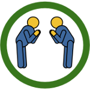
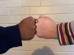

| Globally, instantly recognized as
a friendly, respectful greeting |
Easy to do |
100% touchless |
Maintains a safe social distance |
|
| Brief, slight bow  |
Yes |
Yes |
Yes |
Yes |
| Elbow bump |
No. Looks like a fist fight, or elbowing someone out of the way. |
Maybe. Requires awkward twisting. |
No, but contact is minimal. |
No. Too close for safety. |
| Jazz hands |
No. Looks like someone trying to call attention or shun someone, depending on the hand height. Also used as sign language for applause instead of clapping. |
Yes |
Yes |
Yes |
| Fist bump  |
No. Looks aggressive, macho. Derived from boxing. |
Yes |
No. Unsafe to touch hands! |
Maybe |
| Foot bump |
No. Looks like some kind of dance or kicking. |
No. Requires good balance. |
No, but contact is minimal. |
Maybe |
| Vulcan salute |
No. Understood only by Star Trek fans. May be mistaken for an offensive gesture. |
Requires high finger dexterity. |
Yes |
Yes |
This website is maintained on github, and we invite your help! All contributed content must be public domain or licensed for free unlimited use, such as a CC0 license. Volunteer help needed:
If you can help, contact pr@BowDontShake.org or clone our github site and issue a pull request.
This site is a public health service originally created by David Booth, PhD, and Rafael Richards, MD MS, but which now represents the contributions of many individuals and organizations. For press inquiries and technical questions, contact pr@BowDontShake.org .
v2